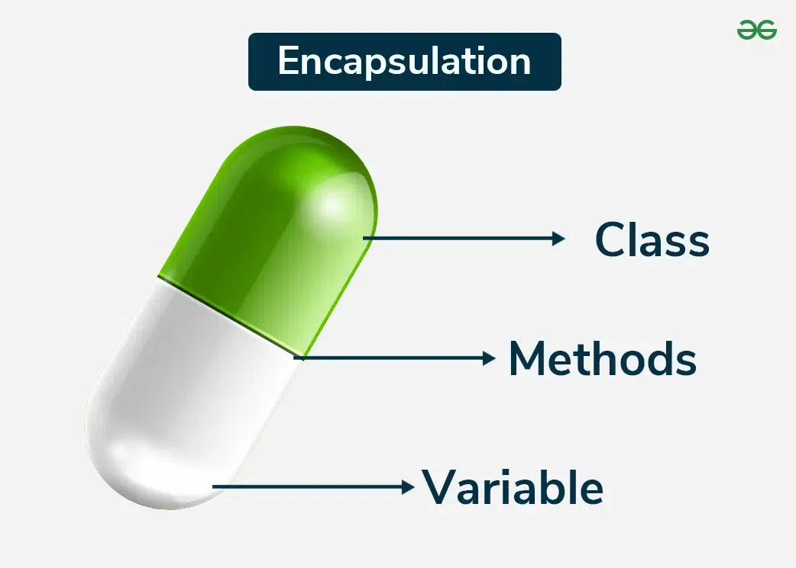
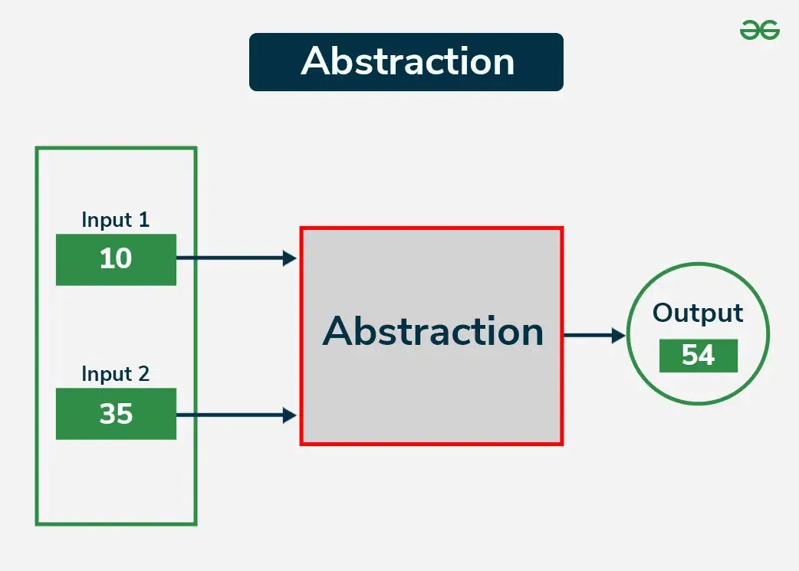
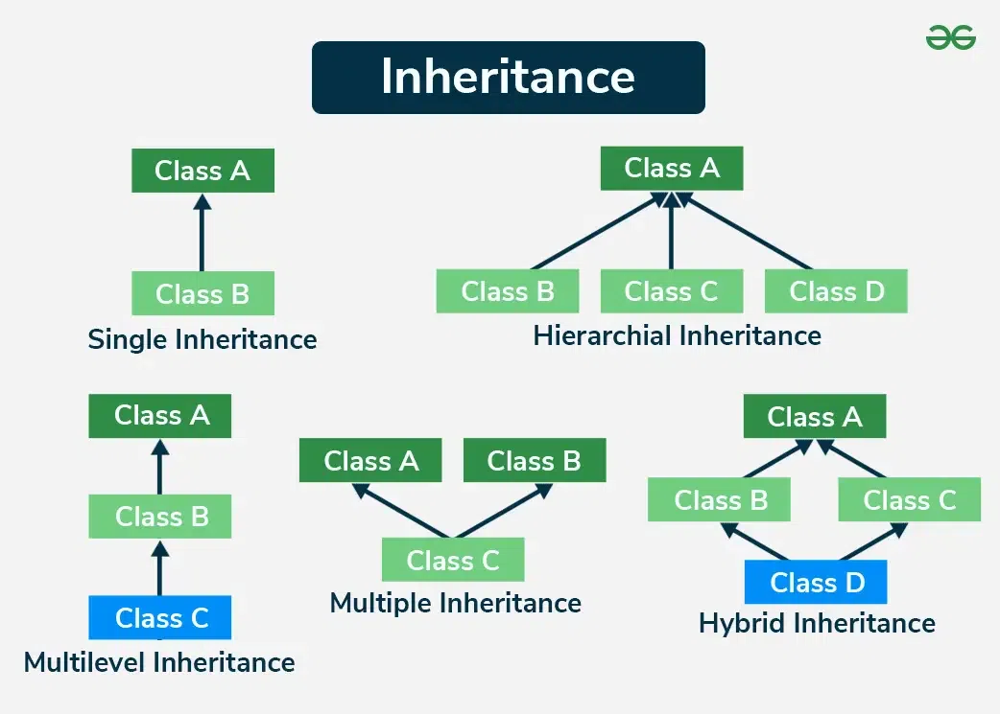
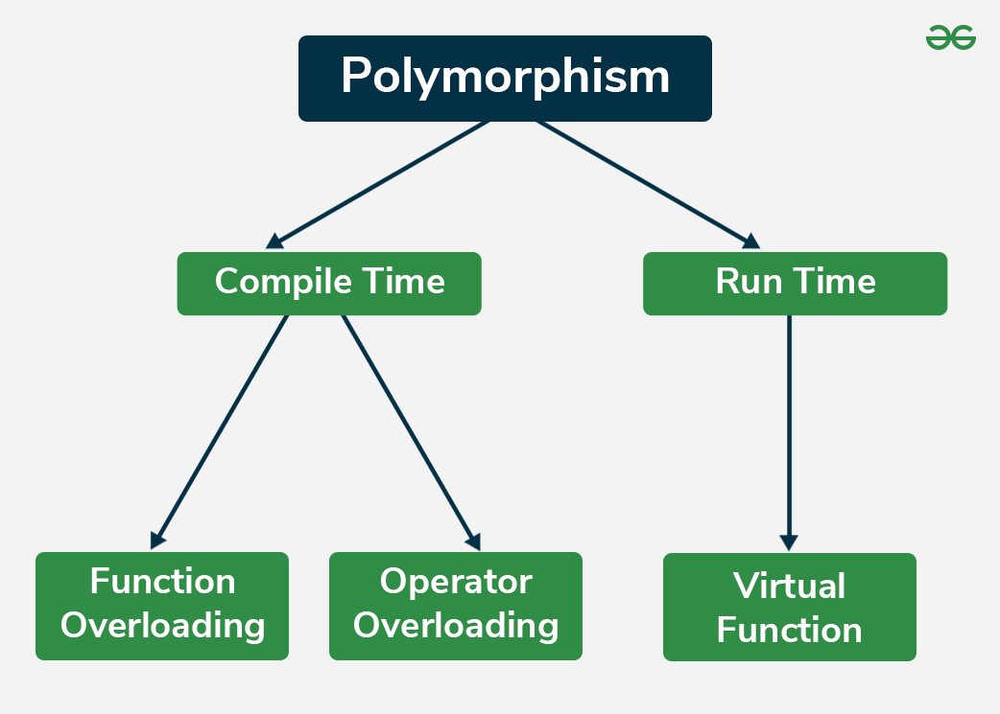

5.15 Object-Oriented Design
Object-oriented design (OOD) is a design technique that solves software problems by building a system of interrelated objects. Instead of focusing on functions, OOD focuses on the data to be manipulated — organising software around objects that combine data and behaviour.
OOD is orthogonal to function-oriented design (§5.14): where FOD asks "what does the program do?", OOD asks "what entities exist and how do they interact?"
Core OOD concepts
1. Objects and classes
- An object is an independent entity with individual characteristics (attributes) and behaviours (methods).
- A class is a blueprint that defines the attributes and methods shared by all objects of that type.
- OOD begins by examining real-world "things" and identifying the objects and classes that represent them.
2. Encapsulation

- Encapsulation bundles data and the methods that operate on that data within a single unit (object).
- Internal state and representation information is held within the object itself — objects can be changed without affecting others.
- External access is through well-defined public interfaces (methods).
3. Abstraction

- Abstraction hides complex implementation details and shows only the essential features of an object.
- It helps manage complexity by allowing designers to focus on interactions at a higher level.
4. Inheritance

- Inheritance allows a new class to inherit properties and behaviours (methods) from an existing class.
- It promotes code reuse and establishes a natural hierarchy between classes (e.g., Vehicle → Car, Truck).
5. Polymorphism

- Polymorphism allows objects of different classes to respond to the same method call in different ways.
- Example: a
draw()method behaves differently for Circle, Rectangle, and Triangle objects. - It enables flexible, extensible designs without modifying existing code.
OOD process
- Identify objects and classes from the problem domain (real-world entities).
- Define attributes and methods for each class based on requirements.
- Establish relationships between classes — inheritance, association, aggregation, composition.
- Design interactions between objects using sequence and collaboration diagrams.
- Apply design principles — high cohesion within classes, low coupling between classes.
OOD vs function-oriented design
| Aspect | Function-Oriented Design | Object-Oriented Design |
|---|---|---|
| Focus | Functions the program performs. | Data/entities to be manipulated. |
| Approach | Top-down (stepwise refinement). | Bottom-up (identify objects first). |
| Decomposition | Function/procedure level. | Class/object level. |
| Grouping basis | Functions grouped to obtain higher-level functions. | Functions grouped by the data they operate on (classes). |
| Design tools | DFD, structure charts. | UML diagrams (class, sequence, use case). |
| Real-world mapping | Functions are not real-world entities. | Objects represent real-world entities with state and behaviour. |
Benefits of OOD
- Produces a system architecture that is modular, adaptable, and easy to understand and maintain.
- Objects are independent entities — can be distributed and can execute sequentially or in parallel.
- Encapsulation, inheritance, and polymorphism promote reusability and extensibility.
- UML diagrams provide a standard visual language for OOD — see §5.16.
Exam question — Object-oriented design
Q: Explain OOD. What are its core concepts? How does it differ from FOD?
Model answer points:
- Define OOD: system of interrelated objects combining data + behaviour.
- Four pillars: encapsulation, abstraction, inheritance, polymorphism — with brief explanation each.
- Process: identify objects/classes → attributes/methods → relationships → interactions.
- vs FOD: data focus vs function focus; bottom-up vs top-down; UML vs DFD/structure charts.